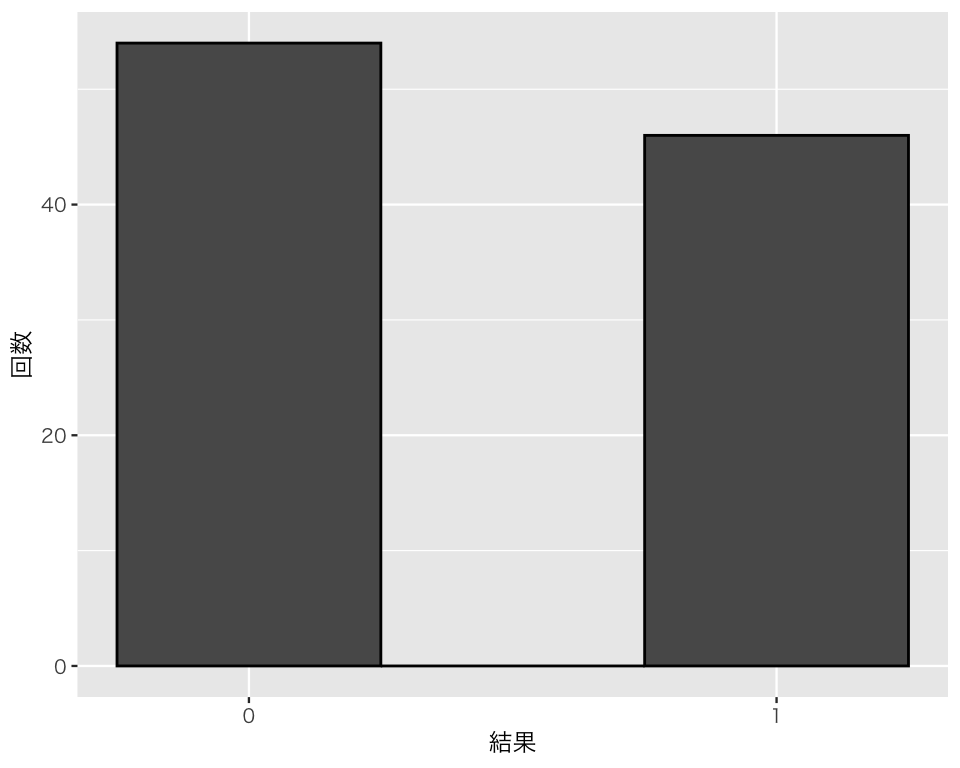

7 離散分布
今回の目標
- 分布（特に離散分布）の確認方法（表と図）を覚えよう。
まず、tidyverseパッケージを忘れずに読み込もう。
Windows ユーザ（大学PCを含む）は、
library(fontregisterer)
theme_set(theme_gray(base_size = 9,
base_family = "Yu Gothic"))を実行する。
Linux ユーザ（IPAexフォント が利用可能である場合）は、
theme_set(theme_gray(base_size = 9,
base_family = "IPAexGothic"))を実行する。
macOS ユーザは、
theme_set(theme_gray(base_size = 9,
base_family = "HiraginoSans-W3"))を実行する。
7.1 離散分布の例
7.1.1 コイン投げ
コイン投げを例として、分布について考えよう。 まず、投げるためのコインを用意する。
coin <- c("表", "裏") # コインを定義するcoin は、「表」と「裏」から成るベクトルである。中身を確認してみよう。
coin[1] "表" "裏"次に、このコインを「投げ」よう。 自分で決めた特定の対象から、ランダムにどれかを選びたいときは、sample() 関数を利用する。たとえば、この関数を使ってコイン投げを実行したいときは、
sample(coin, size = 1)[1] "表"とする。size で何回選ぶか（何回コインを投げるか）を指定している。
これを何度か実行してみよう。
sample(coin, size = 1)[1] "裏"sample(coin, size = 1)[1] "裏"sample(coin, size = 1)[1] "表"sample(coin, size = 1)[1] "裏"sample(coin, size = 1)[1] "表"（実際にコインを投げているのと同じように）結果はランダムに決まるので、上で得られる結果は人によって異なる。あなたの実行結果は、この資料やあなたの隣の席の人の結果とは異なるはずだ。
次に、選ぶ回数を変えてみよう。
sample(coin, size = 2)[1] "裏" "表"もう一度やってみよう。
sample(coin)[1] "裏" "表"さらに、もう一度やってみよう。
sample(coin, size = 2)[1] "表" "裏"これを何度やっても、1回目が表なら2回目は裏、1回目が裏なら2回目が表になる。つまり、2回目のコイン投げはランダムではない。これは、sample() が決められた対象から1つずつ順番に選ぶという作業をしているためである。私たちが定義した coin の中身は「表」と「裏」の2つしかない。この2つから順番に選ぶ作業をすると、1つ目に表（裏）が出れば、2回目に残されているのは裏（表）だけなので、2回目がランダムではなくなってしまう。
試しに選ぶ回数を3回にしてみよう。
sample(coin, size = 3)Error in sample.int(length(x), size, replace, prob): cannot take a sample larger than the population when 'replace = FALSE'エラーが出た。選ぶ対象が2つしかないのに3つは選べないのでエラーになる（エラーをよく読むと、そのように書いてある）。
したがって、sample() を使ってコイン投げを2回以上行うには、少し工夫が必要になる。sample() は私たちが特に指示をしないと非復元抽出（sampling without replacement）を行う。非復元抽出というのは、1度選んだものは選択肢から外すという選び方である。何度もコイン投げを繰り返すには、復元抽出 (sampling with replacement) を行えばよい。復元抽出では、1度選んだものも選択肢の中に戻す（選択肢として復元する）という選び方である。 sapmle() で復元抽出を実行するために、replace = TRUE という指示を加える。
sample(coin, size = 5, replace = TRUE)[1] "裏" "裏" "表" "表" "裏"これでコイン投げを複数回実行できる。
試しにコインを10回投げて、その結果を coin10 という名前で保存してみよう。（|> print()は結果を表示するためにつけているだけなので、結果を表示する必要がないならなくてもよい。）
[1] "裏" "表" "裏" "表" "表" "裏" "表" "表" "表" "裏"10回のうち、表は何回出ただろうか？Rを使って数えてみよう。数えるために、以下の方法をとる。
- 特定のコイン投げ（1回目, 2回目, \(\dots\), 10回目）が表だったかどうか調べる
- 表の回数を数える
Rである特定の値（数または文字列）になっているか調べたいときは、== （二重等号）を使う。
= [等号1つ] は <- と同じで右側の内容を左側に保存してしまうので注意。
「二重等号の左側は右側と同じかどうか」を調べ、同じときは TRUE（真）、異なるときは FALSE（偽）という答えが返ってくる。簡単な例で確認してみよう。
a <- 2 # aに2を代入する
a == 2[1] TRUEa == 3[1] FALSEa == "裏" # 文字列と比べるときは文字列を引用符で囲む[1] FALSEこれを使って、上で行った10回のコイン投げが表だったかどうか確かめよう。
coin10 == "表" [1] FALSE TRUE FALSE TRUE TRUE FALSE TRUE TRUE TRUE FALSEこのように、各回について、表 (TRUE) か裏 (FALSE) かを教えてくれる。
私たちは表が何回出たかを知りたいので、TRUE の回数を数えればいい。ここでは、10回しか投げていないので、自力で数えることもできるが、数が増えると数えるのは面倒である。そこで、Rを使って数える。Rでは TRUE と FALSE を数として扱うと、TRUE は 1、FALSE は0 とみなされる。したがって、TRUEの数を数えたいなら、上の結果を合計すればよい。合計は sum() で求められるので、次のようにする。
sum(coin10 == "表")[1] 6表は10回中6回だったことがわかる。
分布について考えるために、コイン投げを100回行ってみよう。
coin100 <- sample(coin, size = 100, replace = TRUE)まず、結果を度数分布表にしてみよう。そのために、table() を使う。
table(coin100)coin100
表 裏
46 54 これで、表と裏がそれぞれ何回ずつ出たかがわかる。
次に、それぞれが出た割合を表にしてみよう。合計で100回投げたので、度数分布表を100で割ればよい。
table(coin100) / 100coin100
表 裏
0.46 0.54 これがコインを100回投げて得られた「分布」である。合計が1になっていることが表からわかるが、念のためにRで確認する。
合計が1であることが確認できた。
また、具体的に投げた回数（度数分布表の度数の合計）が100かどうかわからない場合に備え、もう少し汎用的な書き方すると、
となる。
さらに、proportions() で割合を計算することもできる。
proportions(table(coin100))coin100
表 裏
0.46 0.54 上のコードは、パイプ演算子（|>）を使って次のように書くこともできる。
coin100 |>
table() |>
proportions()coin100
表 裏
0.46 0.54 次に度数分布と分布を図にしてみよう。 そのために、tibble() （あるいはデータフレーム）を作る。
D <- tibble(res = coin100)まず、度数分布を図にする。棒グラフgeom_bar()を使う。
bar_coin <- ggplot(D, aes(x = res)) +
geom_bar(color = "black", width = 0.3) +
labs(x = "結果", y = "回数")
plot(bar_coin)次に、分布をヒストグラムで表したい。ヒストグラムを作るためには、横軸の値を数値にする必要がある。 そこで、表を1、裏を0に置き換える。たとえば、以下のコードを使う。
これで、表を1、裏を0とするres2という名前の変数がDの中にできた。元々あったresとの対応を確認してみよう。
resの表がres2の1，resの裏がres2の0に対応することがわかる。
この新しい変数を使って、もう1度度数分布を図にしてみよう。今度は、geom_bar() の代わりにgeom_histogram() を使う。
bar_coin2 <- ggplot(D, aes(x = res2)) +
geom_histogram(color = "black", binwidth = 0.5) +
labs(x = "結果", y = "回数") +
scale_x_continuous(breaks = 0 : 1,
minor_breaks = NULL)
plot(bar_coin2)
hist_coin <- ggplot(D, aes(x = res2, y = after_stat(density))) +
geom_histogram(color = "black", bins = 2) +
labs(x = "結果", y = "割合") +
scale_x_continuous(breaks = 0 : 1,
minor_breaks = NULL)
plot(hist_coin)
取りうる値が0と1の2つしかないので、bins = 2 でビン（ヒストグラムの棒）の数を2に制限している。
7.1.2 サイコロ投げ
sample()関数を使って、サイコロ (die) 投げを実行してみよう。 まずは、サイコロを定義する。
die <- 1 : 6 # 1から6までの整数
# 以下のような書き方も可能
# die <- c(1, 2, 3, 4, 5, 6)
# die <- seq(from = 1, to = 6, by = 1)これを復元抽出すれば、サイコロ投げを何度も行える。100回投げてみよう。
die100 <- sample(die, size = 100, replace = TRUE)3は何回出ただろうか？
sum(die100 == 3)[1] 1616回出たことがわかる。
度数分布を確認しよう。
table(die100)die100
1 2 3 4 5 6
18 23 16 20 6 17 この結果として得られた分布は、
die100 |>
table() |>
proportions()die100
1 2 3 4 5 6
0.18 0.23 0.16 0.20 0.06 0.17 である。
この分布を図にしよう。
D2 <- tibble(res = die100)
hist_die <- ggplot(D2, aes(x = res, y = after_stat(density))) +
geom_histogram(color = "black", bins = 6) +
labs(x = "出た目", y = "割合") +
scale_x_continuous(breaks = 1 : 6,
minor_breaks = NULL)
plot(hist_die)ここまでは、「正しいコイン (a fair coin)」や「正しいサイコロ (a fair die)」を想定してきたが、特定の目が出やすいサイコロ（やコイン）を使うこともできる。「1が出る確率だけ他の目の4倍」というサイコロを1,000回投げてみよう。そのために、prob で各目が出る比率を指定する（確率を指定してもよい）。
1が何回出たか確かめてみよう。
sum(unfair1000 == 1)[1] 4431,000回のうち、443回1の目が出たことがわかる。
この結果の分布を確認しよう
unfair1000 |>
table() |>
proportions()unfair1000
1 2 3 4 5 6
0.443 0.117 0.098 0.120 0.097 0.125 この分布を図にしよう。
D3 <- tibble(res = unfair1000)
hist_die_unfair <- ggplot(D3, aes(x = res, after_stat(density))) +
geom_histogram(color = "black", bins = 6) +
labs(x = "出た目", y = "割合") +
scale_x_continuous(breaks = 1 : 6,
minor_breaks = NULL)
plot(hist_die_unfair)このように、それぞれの選択肢が選べる確率を自由に設定して実験することができる。
また、選ぶ対象も自由に設定できる。たとえば、
univ <- sample(c("高知工科大", "高知県立大", "高知大"),
size = 10,
replace = TRUE,
prob = c(3, 2, 1))
univ |>
table() |>
proportions()univ
高知大 高知工科大 高知県立大
0.2 0.5 0.3 のようなこともできる。
7.2 実習課題
- 1から6までの目がある「正しい」サイコロを2個振るという作業を1,000回繰り返そう。
- 出た目の合計が9になる回数を数えてみよう。
- 出た目の合計の分布を表と図にして確認しよう。
- 「正しくない」コイン（表が出る確率が0.5ではないコイン）を500回投げよう。表が出る確率は自由に設定してよい（ただし、0, 0.5, 1 を除く）。
- 表が出た回数を数えよう。
- 分布を表と図にして確認しよう。